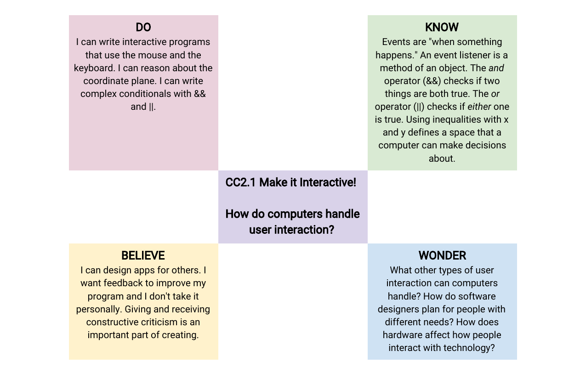

Case Study
Creative Coding Series
CC1–CC3

The Creative Coding Series was Vidcode's core K–12 curriculum: three sequential courses teaching JavaScript through creative, project-based work. The courses were designed to be taught by educators with no programming background and to fit into any subject area — art, history, science, or a dedicated computing elective. My contributions spanned tutorial writing, curriculum review, standards alignment, and the adaptation of course material for two external partners: Girl Scouts USA and BrainPOP.
Vidcode was built on a specific belief: that creativity is not a distraction from learning to code, but the mechanism through which students actually learn. Every project in the series produced something students could show someone else: a video filter, an animation, a game, an interactive portrait. The choice of which concept to introduce next was never purely a question of logical dependency. It was also a question of what that concept could do for a student expressively, right now. Arrays were introduced through building a list of things that mattered to the student. Randomness was introduced as a way to make things feel alive rather than mechanical.
The other central design premise was teacher accessibility. A teacher who couldn't code needed to be able to run these lessons without becoming a liability in the room. This shaped everything from the platform interface to the lesson plan format to how hints were structured: the goal was always to keep the teacher in a facilitative role, not a technical one.
The three courses form a deliberate arc. Creative Coding 1 introduces JavaScript fundamentals through short, approachable projects, building confidence and vocabulary. Creative Coding 2 deepens that foundation across four units: interactivity (event listeners, logical operators), procedural art (loops, functions), language and data (string manipulation, parameters), and a collaborative culminating unit. Creative Coding 3 moves into more advanced territory: user interface design, algorithmic thinking, and data modeling.

Each unit followed a consistent internal structure. Tutorials introduced new concepts through guided projects, written in a direct voice aimed at students, with each step moving the project forward visibly. Practices reinforced concepts already encountered, requiring transfer rather than step-following. Creative Coding Challenges gave students open-ended prompts: no single correct output, just a conceptual constraint and room to make something their own. Quizzes tested students' ability to read code and describe what it does — a distinct skill from writing it.
Units were framed using a DO / KNOW / BELIEVE / WONDER structure that treated learning goals as more than skill acquisition. Do captured procedural competencies; Know captured conceptual understanding; Believe captured dispositions — the unit on interactivity asked students to believe that giving and receiving feedback is a normal part of making things; Wonder articulated the questions the unit was designed to open up, not close down.

Tutorial and lesson writing. I wrote and edited learner-facing tutorial content: the step-by-step instructions students worked through on the platform. Good tutorial writing for beginners is not the same as clear technical documentation; it has to carry emotional register as well as informational content — which detail to give now, which to defer, how to frame a new concept so it connects to something the student already understands.


Curriculum review. I conducted a detailed review of Creative Coding 2, producing written notes on the conceptual arc, the consistency of the hint system, platform UX issues affecting the learning experience, and places where implicit assumptions about prior knowledge needed to be made explicit. This kind of close reading — looking at a curriculum both as a learner moving through it and as a designer assessing its logic — is a distinct form of design work.
Standards alignment. I worked on aligning course content to CSTA K–12 Computer Science Standards at Levels 1B and 2, as well as the AP Computer Science Principles framework. This meant ensuring coverage was substantive: the standard was genuinely met by what students were asked to do, not merely referenced in the documentation.
Partner adaptations. For Girl Scouts USA, I contributed tutorial content for a JavaScript self-portrait project using the webcam and graphical overlays, designed to give participants a complete creative experience in a short session, plus a World Leaders tutorial introducing object syntax through notable women in computing and GSUSA history. For BrainPOP, the task was connecting Vidcode's coding activities to BrainPOP's existing topic library so that coding extended rather than replaced BrainPOP's core content.
The most persistent design problem was the tension between scaffolding and open-endedness. A well-scaffolded tutorial removes obstacles and keeps students moving, but it can also remove the productive struggle that makes learning stick. The Creative Coding Challenges were one answer: they deliberately loosened the structure to give students room to make something genuinely their own. But the transition from "follow these steps" to "make something with what you've learned" is not automatic, and it was a recurring question how to support that transition without closing it down again.
The hint system raised the same tension in miniature. A hint that simply reveals the answer trades short-term frustration relief for long-term understanding. I developed a taxonomy ranging from redirecting questions to partial solutions to analogies drawn from the student's own earlier code — trying to preserve as much learning value as possible while still providing real support.